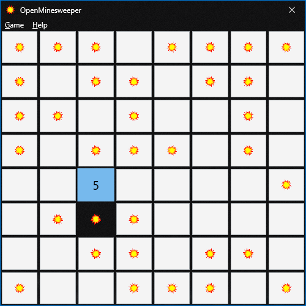

Exact count
If a number touches the same amount of covered tiles as its value, all those covered tiles are mines.
OpenMinesweeper
Minesweeper is a logic puzzle. Numbers tell you how many mines touch that square, and your job is to reveal all safe squares.
Back to downloads
Basics
Logic
If a number touches the same amount of covered tiles as its value, all those covered tiles are mines.
If a number already has enough flagged mines touching it, every other covered tile touching that number is safe.
Before guessing, scan nearby numbers. Minesweeper usually gives you a logical move somewhere else on the board.